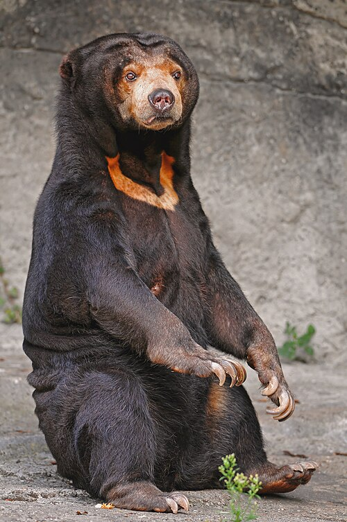

The Marlowe Evening Register
BEAR’S HONEY BAFFLES
LOCAL KEEPERS
Small visitor draws crowds to apiary — unusual sweetness brings callers back

A small bear discovered behind an apiary storehouse has become an unexpected attraction following reports that honey drips continually from its forepaws. No damaged hive has been located.
The animal, identified as a sun bear, appears untroubled by the attention. Keepers placed a clean collecting bowl beneath its paws after finding the storehouse floor sticky each morning.
“We washed its paws,” one attendant told this newspaper. “By morning the bowls were full again.”
Visitors permitted a taste described a sweetness unlike any honey previously known to them. Several returned before opening hours the following day, asking whether further quantities might be purchased.
A local examiner has requested that no more be distributed until its origin is understood. The request has proved difficult to enforce. Callers have travelled considerable distances, and queues now extend beyond the gate.
With shortages still troubling households in the aftermath of war, there is understandable interest in any new source of nourishment. Those in charge caution that no claim of inexhaustible supply has yet been established.
The bear has not been given a public name. No owner has come forward.
There were no bees that winter.
From the editor
The promise of abundance must be examined as carefully as the fact of shortage. Hope is not a substitute for an account of its source.
Letters to the Register
Readers are asked to include a return address. Anonymous correspondence cannot be acknowledged. Original enclosures should not be sent.
Keep your copies
Bound volumes of THE REGISTER
Enquiries to the circulation office.
Yesterday's news is tomorrow's record.